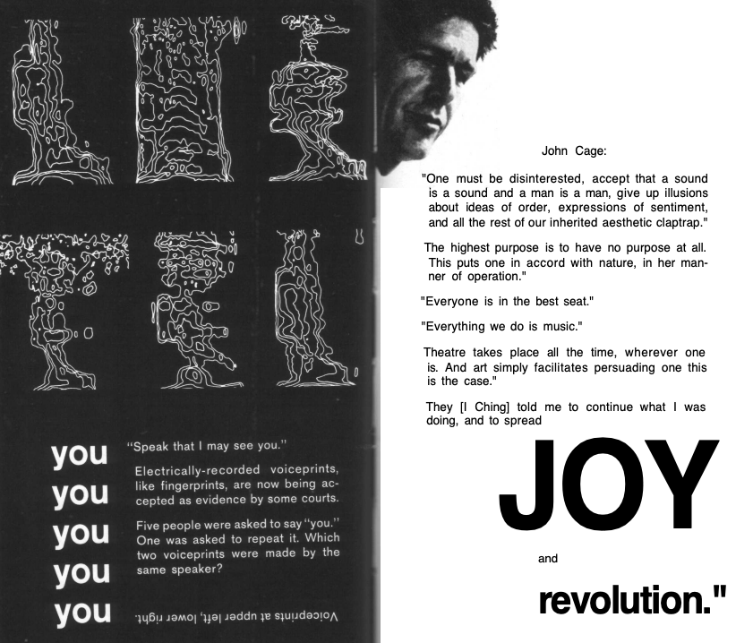

the massage
Marshall McLuhan explains how media gives extensions to our natural senses which creates new perceptions. I agree with this idea because media gives us new ways of seeing things. Whether it be a situation we can relate to from a micro level to a macro level or simply seeing a situation from another person's perspective. Media has given us the ability to experience a lot by using our senses in different forms.
1
2
3
4